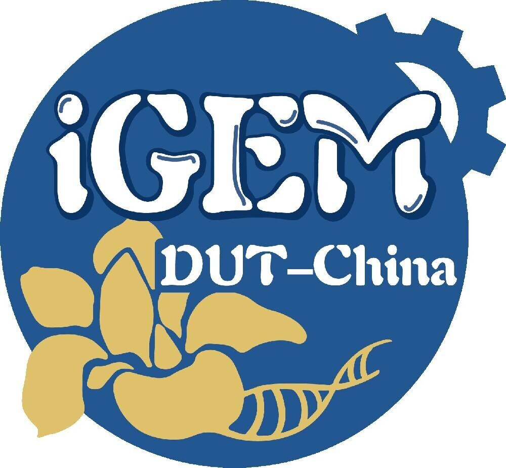
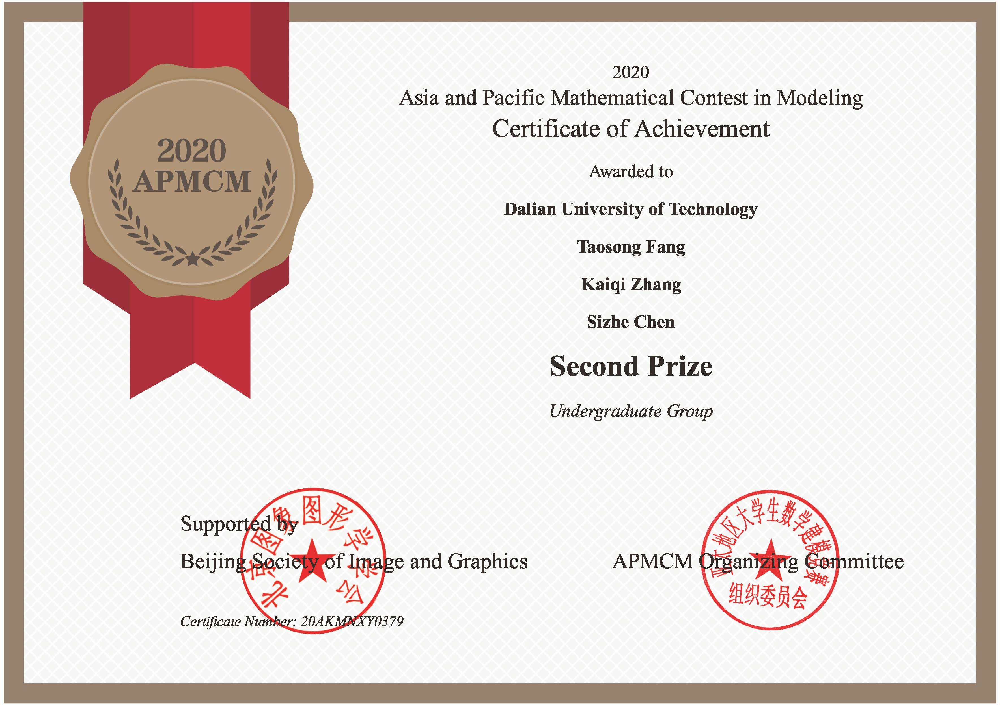

方陶松
基本信息
- 名字：方陶松
- 性别：男
- 就读院校：大连理工大学软件学院
- 专业排名：174/385
- 英语四六级：570/477
- CSDN博客：https://blog.csdn.net/hope73
- GitHub：https://github.com/fangtaosong
联系方式
- 电话：19855596426
- 邮箱：lighting@mail.dlut.edu.cn
- 微信：topologian
- QQ：1005394403
科创荣誉
2020-2021学年科技创新奖学金（1.5%）
2020-2021腾讯高校创新俱乐部优秀成员（全国20人）
2020-2021腾讯高校创新俱乐部技术之星（全国10人）
竞赛经验
2020年国际基因工程机器大赛(iGEM) 金牌
第14届蓝桥杯全国软件和信息技术专业人才大赛 一等奖 全省第15名
2020亚太地区数学建模 二等奖
-
负责内容
我是队伍的队长，负责数学建模，代码编程和论文写作。
-
照片和证书
我们使用主成分分析(PCA)的方法对数据进行降维，提取主成分的重要值。之后，通过对不同结果的比较，我们可以很容易地分析出美国共和党和民主党的不同政治倾向。

2021mathorcup数学建模竞赛 三等奖
-
负责内容
我是队伍的队长，负责数学建模，代码编程和论文写作。
-
关于模型
我们建立了一个三位粒子群模型对晶体团簇进行结构预测（定性分析），并且建立了一个基于随机森林的预测模型预测该结构的能量值（定量预测）
2021认证杯数学建模竞赛 三等奖
-
负责内容
我是队伍的队长，负责数学建模，代码编程和论文写作。
-
关于模型
使用多种聚类方式对数据集中的恒星坐标进行建模，来预测该星团中可能出现的成员星。
中国高校计算机大赛————微信小程序应用开发赛 东北赛区三等奖（大工仅两支获奖队伍）
-
负责内容
这个小程序可以说是我单刷的，从设计到前端到后端到美工到文档写作都是我一个人完成的。
-
关于该小程序
本项目是一个面向考研升学的大学生的校园小程序，由个人目标、资讯推送，自律计时等模块构 成，目的是给“考研党”乃至全体大学生提供一个方便易用，功能完善简介，界面美观，使用高效的微信 小程序。开发周期两个月，代码行数10,000行以上。
.jpg)
.jpg)
.jpg)
第二届全国大学生算法设计与编程挑战赛（春季赛） 三等奖
2021中国机器人大赛 先进视觉组（进行中）
-
内容
用基于realsnese的深感摄像头进行机器人运动状态下的3d物体检测。
2021 iFLYTEK A.I.开发者大赛 基于用户画像的商品推荐挑战赛（进行中）
-
内容
基于用户画像的产品推荐，需基于提供的样本构建模型，预测用户是否会购买相应商品。
单人参赛，该比赛正在进行中，我以较好的成绩进了复赛。
掌握技能
AI开发
-
深度学习（目标检测方向）
能够使用rbg照片进行目标检测，复现过YOLO v5
也可以使用rgbd相机进行基于点云的实时目标检测
-
数据挖掘（推荐系统方向）
熟悉推荐系统常用的模型（树模型，神经网络），也尝试过复现一些相关的算法。
程序设计（ACM）
互联网开发
-
微信小程序
能够熟悉工具类数据展示类样式类的小程序的开发，熟悉使用小程序开发调试工具，熟悉小程序开发流程及相关规则，开发的刷题类微信小程序在校内有400+用户。
-
网站开发
熟悉vue，react等前端框架，了解node.js ,熟悉安装node模块，基于node.js 开发vue模块化的网站，并用webpack打包构建优化。